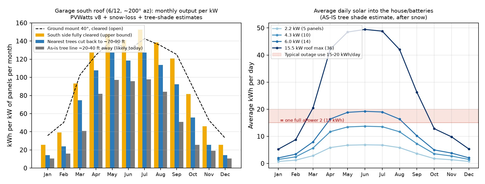

The current plan
The plan is three parts: three FranklinWH aPower 2 batteries with the aGate on the left wall of the garage, a starter solar array that fills the garage’s south roof, and space plus an outdoor inlet for a portable 240V dual-fuel generator that plugs into the aGate’s generator input when needed. A Tesla Wall Connector sits on a load-managed circuit. Propane heat is what makes about 45 kWh of batteries workable, because the furnace only needs its blower and controls.
About 2–3 days on batteries
About 45 kWh of storage covers essentials (well, furnace blower, fridge, lights, internet, roughly 15–20 kWh a day) for about 2½–3 days. Heavy hot-tub or EV use shortens that.
Longer outages = solar, then the portable
From spring to fall the south-roof array refills the batteries on most days. In a long winter outage, when trees and snow cut solar, the portable generator is rolled out, plugged into the inlet, run a few hours to recharge the batteries, and shut off.
Garage layout
The battery wall is on the left (south) wall of the garage, with 36 in kept clear in front and bollards. One car lift is in the right bay, and the Wall Connector is on the right bay’s front wall. See the garage v2 plan.
Planning notes only, not a bid, load calculation or engineering document. The installer finalizes the equipment, the layout and the code details.
FranklinWH battery wall
What goes on the wall
- 3 × aPower 2, about 15 kWh each, about 45 kWh total.
- aGate, the control and transfer unit. It islands the house in an outage and has the solar and generator inputs.
- Generator input (FranklinWH Generator Module if the installer needs it) for the portable generator inlet.
Placement
- Along the left garage wall, away from the lifting platform and the car lift.
- Keep 36 in clear in front and add bollards against car bumps.
- Leave wall space for a future solar inverter, plus a conduit stub-up from the roof (placeholders on the garage plan).
- The installer sets the exact spacing and clearances.
Portable dual-fuel generator on an outdoor inlet
FranklinWH supports one generator source. This house uses a portable one: no permanent standby generator and no generator pad.
The setup
- A 240V split-phase dual-fuel portable (a typical home-center model) runs on gasoline, or on propane from the existing tank through an outdoor quick-connect.
- It plugs into a weatherproof outdoor generator inlet on the outside of the south garage wall, wired to the aGate’s generator input. It charges about one battery per 3–4 hours, roughly 4–5 kW into the batteries.
- Keep a parking spot for it on the outside wall by the inlet, clear of windows and doors, and store it in the garage or shed between uses.
How it’s used
- Manual start: when the batteries run low in a long outage, start it, run it a few hours, and shut it off.
- Run it outdoors only, well away from doors and windows. Never in the garage.
- The installer confirms the inlet rating, the generator size the aGate accepts, and the wiring.
Can the Airstream charge the batteries?
Not practically. The Airstream Interstate 24X’s built-in Onan generator is about 2.5 kW, 120V only, and runs on the coach’s own small propane tank. FranklinWH doesn’t support 120V generators, so it can’t plug into the house inlet. Stepping it up to 240V with an autotransformer isn’t FranklinWH-approved and would add only about 1–1.5 kW, so a full refill would take a day or more and several propane fills. Use the Airstream as a self-contained warm refuge in an outage, with cords to a fridge or freezer if needed, and use the house generator for the batteries. Never run the Onan inside the garage.
A lithium and solar retrofit on the Airstream is worth doing for the camper itself, but it adds only a few kWh and barely helps the house.
Tesla Wall Connector
The Wall Connector goes on the front wall of the right bay, on the pier between the center and right doors. A cable path of about 17–19 ft reaches the Model Y’s charge port when it is parked nose-in under the lift. It goes on a load-managed circuit so EV charging can’t overload the house, and charging is paused whenever the house is running on backup.
Starter solar array: fill the garage south roof
The plan is a starter array that fills the garage’s south roof, about 36 panels after fire-code pathways and setbacks. It is installed with the batteries or soon after, with the inverter path the installer chooses (microinverters handle tree shade better; an aPower S with its built-in solar input is the other option).
- Reserve the aGate solar breaker position, so the array lands on the backed-up side.
- Conduit from the aGate up to the garage roof, and wall space for an inverter or disconnect beside the batteries.
- Get a measured shade report first; trimming the nearest band of trees helps more than extra panels.
Garage south roof: sun analysis
The roof
- Faces about 200° (SSW) at a 6/12 pitch. Confirm the azimuth with a compass.
- After fire-code pathways and setbacks, room for about 36 panels (430 W, about 15.5 kW).
- A Starlink dish near the ridge: keep the top row clear or move the dish.
Trees are the limit
- Tall woods start roughly 20–40 ft south of the garage and block most of the low winter sun.
- Unshaded, the roof would make about 1,140 kWh per kW a year after snow. As-is, the estimate drops to about 630.
- Cutting back the nearest band of trees helps more than adding panels. A measured shade report is needed before buying.
Minimum useful array
- About 6 kW (14 panels) with the trees as they are.
- About 4 kW (10 panels) with the nearest trees cut back.
- About 2 kW makes too little to be worth it (under 1 kWh a day in winter).
What to expect: a full south roof (about 15.5 kW) makes more than a frugal outage day from April to September, even with today’s trees. From December to February it covers only part of an outage day, so the portable generator stays in the plan for winter.


Car lift: one, in the right bay
The garage plan keeps one 4-post high-rise lift (BendPak HD-9XW class) in the right bay: the Model Y parks under it and the 911 goes on top. It sits behind the side door’s open-panel line (about 10.5 ft in), so a car on top clears the door. The XT5 parks in the left bay without a lift, which leaves the left wall free for the FranklinWH battery wall. The Airstream stays in the 12×12 center bay. Do not use the top lock until the ceiling is taped, and confirm drive-under and post spacing with the lift installer.
Concept planning only, not a bid, load calculation or engineering document. Solar figures are model estimates (PVWatts v8, NSRDB TMY) with assumed snow and tree shading. Equipment choices and code details are confirmed by the installer on site.